Past ADASS Conferences
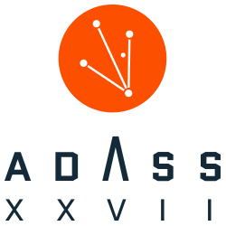
ADASS XXVII - The 27th annual ADASS conference was held from October 22th to 26th, 2017 at the Sheraton Santiago Hotel and Convention Center, Santiago de Chile, Chile.
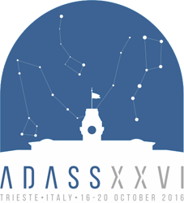
ADASS XXVI - The 26th annual ADASS conference was held from October 16th to 20th, 2016 at the Stazione Marittima Conference Centre, Trieste, Italy.
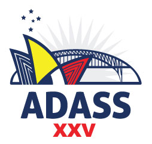
ADASS XXV - The 25th annual ADASS conference was held from in Sydney, Australia 25-30 Oct 2015 .
ADASS XXIV - The 24th annual ADASS conference was held in Calgary, Alberta, Canada, 5-9 Oct 2014.
ADASS XXIII - The 23rd annual ADASS conference was held in Waikoloa, Hawaii, USA, 29 Sept-3 Oct 2013.
ADASS XXII - The 22nd annual ADASS conference ADASS conference was held in Champaign, Illinois, 4-8 November 2012.
ADASS XXI - The 21st annual ADASS conference was held in Paris, France, 6-10 November 2011.
ADASS XX - The 20th annual ADASS conference was held in Boston, Massachusetts, USA, 7-11 November 2010.
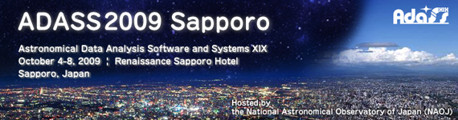
ADASS XIX - The 19th annual ADASS conference was held in Sapporo, Japan from 4-8 October 2009.
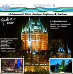
ADASS XVIII - The 18th annual ADASS conference was held in Hotel Loews Le Concorde in Québec City, Québec, Canada from 2-5 November 2008.
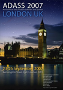
ADASS XVII - The 17th annual ADASS conference was held in Kensington Town Hall in London, UK from 23-26 September 2007.
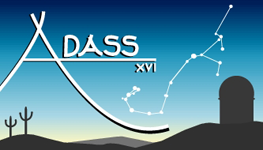
ADASS XVI - The 16th annual ADASS conference was held in Tucson, Arizona, USA from 15-18 Oct. 2006.
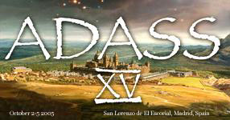
ADASS XV - The 15th annual ADASS conference was held in San Lorenzo de El Escorial, Spain from 2-5 Oct. 2005.
ADASS XIV - The 14th annual ADASS conference was held in Pasadena, California, USA from 24-27 Oct. 2004.
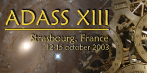
ADASS XIII - The 13th annual ADASS conference was held in Strasbourg, France from 12-15 Oct. 2003.
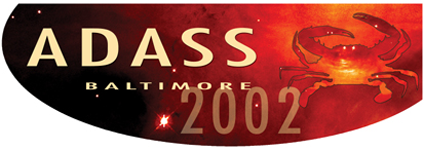
ADASS XII - The 12th annual ADASS conference was held in Baltimore, MD, USA from 13-16 Oct. 2002.
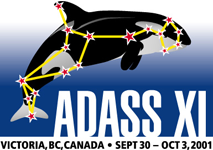
ADASS XI - The 11th annual ADASS conference was held in Victoria, BC, Canada from 30 Sept.-3 Oct. 2001.

ADASS X - The 10th annual ADASS conference was held in Boston, MA, USA from 12-15 Nov. 2000.

ADASS IX - The 9th annual ADASS conference was held in Kona, Hawaii, USA from 3-6 Oct. 1999.
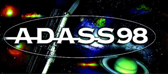
ADASS VIII - The 8th annual ADASS conference was held in Urbana, IL, USA from 1-4 Nov. 1998.
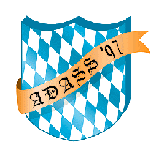
ADASS VII - The 7th annual ADASS conference was held in Sonthofen, Germany from 14-17 Sept. 1997.
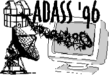
ADASS VI - The 6th annual ADASS conference was held in Charlottesville, VA, USA from 22-25 Sept. 1996.
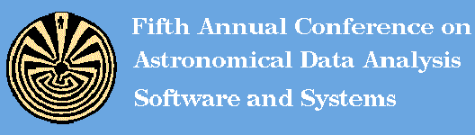
ADASS V - The 5th annual ADASS conference was held in Tucson, AZ, USA from 22-25 Oct. 1995.
ADASS IV - The 4th annual ADASS conference was held in Baltimore, MD, USA from 26-28 Sept. 1994.
ADASS III - The 3rd annual ADASS conference was held in Victoria, BC, Canada from 13-15 Oct. 1993.
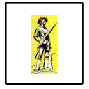
ADASS II - The 2nd annual ADASS conference was held in Boston, MA, USA from 2-4 Nov. 1992.
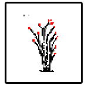
ADASS I - The 1st annual ADASS conference was held in Tucson, AZ, USA from 6-8 Nov. 1991.